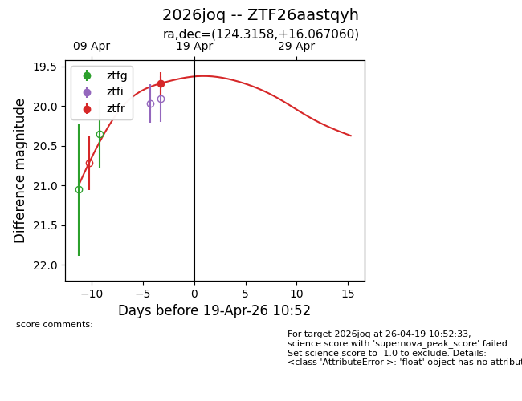
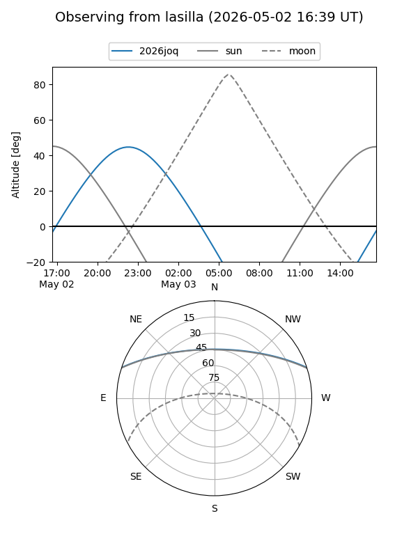
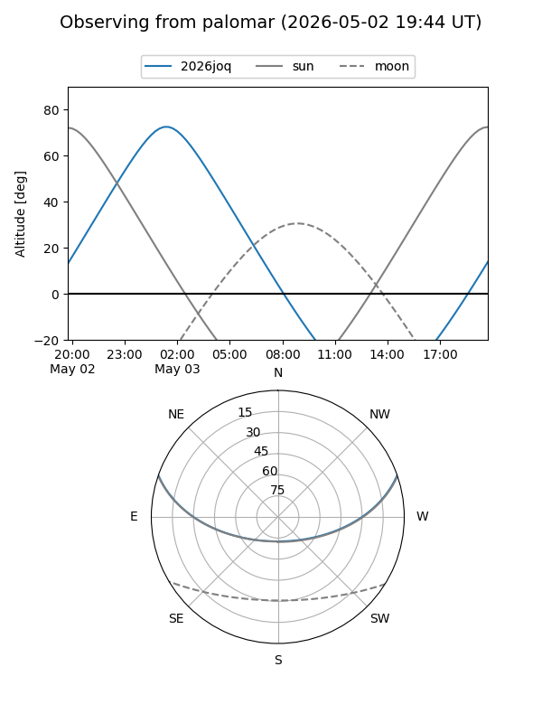
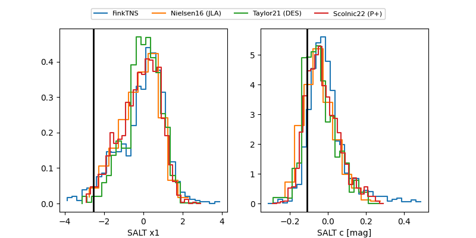

2026joq
Target 2026joq at 2026-04-19 11:03
Aliases and brokers:
FINK: link
Lasair: link
ALeRCE: link
TNS: link
YSE: link
alt names
ZTF26aastqyh (ztf,fink_ztf)
2026joq (tns,yse)
Coordinates:
equatorial (ra, dec) = 124.3158,+16.06706
equatorial (HMS+DMS) = 08:17:15.78,+16:04:01.41
galactic (l, b) = (207.4370,+26.04217)
Flags:
Photometry:
last ztfr=19.71
1 ztfr detections
Lightcurve

Visibility


Additional plots
